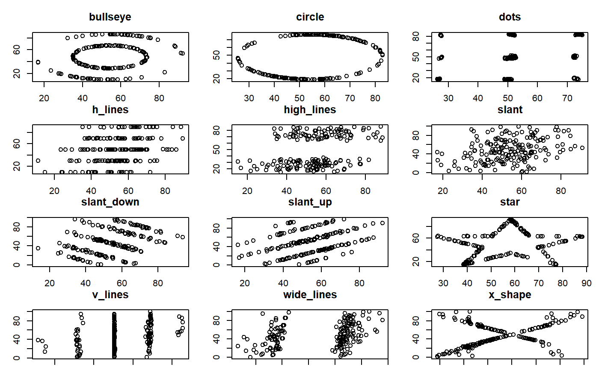

A dataset demonstrating the utility of visualization. These 12 datasets are equal in standard measures: mean, standard deviation, and Pearson's correlation.
twelve_from_slant_wide
A data frame with 182 rows and 24 variables:
bullseye_x: x-values for the bullseye dataset
bullseye_y: y-values for the bullseye dataset
circle_x: x-values for the circle dataset
circle_y: y-values for the circle dataset
dots_x: x-values for the dots dataset
dots_y: y-values for the dots dataset
h_lines_x: x-values for the h_lines dataset
h_lines_y: y-values for the h_lines dataset
high_lines_x: x-values for the high_lines dataset
high_lines_y: y-values for the high_lines dataset
slant_x: x-values for the slant dataset
slant_y: y-values for the slant dataset
slant_down_x: x-values for the slant_down dataset
slant_down_y: y-values for the slant_down dataset
slant_up_x: x-values for the slant_up dataset
slant_up_y: y-values for the slant_up dataset
star_x: x-values for the star dataset
star_y: y-values for the star dataset
v_lines_x: x-values for the v_lines dataset
v_lines_y: y-values for the v_lines dataset
wide_lines_x: x-values for the wide_lines dataset
wide_lines_y: y-values for the wide_lines dataset
x_shape_x: x-values for the x_shape dataset
x_shape_y: y-values for the x_shape dataset
Matejka, J., & Fitzmaurice, G. (2017). Same Stats, Different Graphs: Generating Datasets with Varied Appearance and Identical Statistics through Simulated Annealing. CHI 2017 Conference proceedings: ACM SIGCHI Conference on Human Factors in Computing Systems. Retrieved from https://www.autodeskresearch.com/publications/samestats.
#save current settings state <- par("mar", "mfrow") # plot par(mfrow = c(4, 3), mar=c(1,3,3,1)) nms <- names(twelve_from_slant_wide) for (i in seq(1, 23, by = 2)){ nm <- substr(nms[i], 1, nchar(nms[i]) - 2) plot(twelve_from_slant_wide[[nms[i]]], twelve_from_slant_wide[[nms[i+1]]], xlab = "", ylab = "", main = nm) }#reset settings par(state)